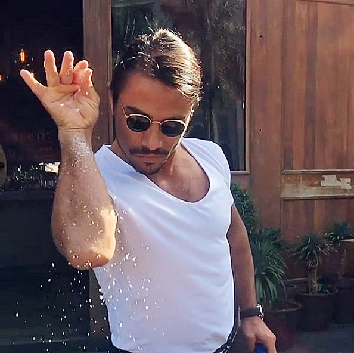

(づ ◕‿◕ )づ
I am a Software Developer, beginner Web Developer, and former pre-med student. I'm also a music dabbler, video game enjoyer, and running enthusiast
My Skills

I started to learn how to code using Java in highschool, but didn't touch programming until after finishing my Biochemistry degree. Now I've created projects using Java, C, Python, and now HTML and CSS.

I love cooking delicious yet healthy food that aids my running and overall health. In the same vein I love trying new types of food and traveling to try different kinds of cuisine. I especially like Italian and Japanese food.